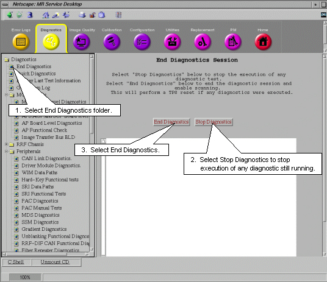

Proprietary to General Electric
Direction 5500113, Rev# 3
Discovery MR750 3.0T Service Methods
Module Version 2.0, Version Date 3/7/08
Proprietary to General Electric |
Select the desired diagnostic test to run. The components that can be tested are listed in Table 1 in Hardware Tested.
Tests can be deselected or selected from the Selection column by highlighting the box next to each. See example in Illustration 1. Other choices can be made depending on which test group is selected. These choices are described in the following sub-sections.
Illustration 1: EXAMPLE DIAGNOSTIC TEST SELECTIONS

The Small pattern usually performs a walking ones and walking zeroes pattern whereas the Large pattern will perform a walking ones, walking zeroes, 0xaaaa, 0x5555, and possibly other patterns. As a result, selecting the Large pattern will generally provide a longer and more exhaustive test. If the problem is highly intermittent then it may be desirable to select Large pattern.
These options are only available with the proprietary diagnostics.
Selecting Stop Test on max errors will require you to enter a number greater than 0 (zero) in the entry box labeled Max Error Value. The test will, as the name implies, stop when the number of test errors reaches this number.
Selecting Stop Logging on max errors will require you to enter a number greater than 0 (zero) in the entry box labeled Max Error Value. The test will, as the name implies, stop logging error messages when the error count reaches this number.
The default selection is Continue on max errors. When this is selected, the test will run until stopped by the FE.
The number entered in the Total Iterations box determines how many times the selected diagnostics will run.
Default: Selecting this will configure the selections and options into a default condition.
Clear All: Deselects all selections and options.
Calculate Time: Once all the selections and options are made then selecting this button will provide you with an estimate of the total run-time needed to complete all the tests.
Run: Select this button to start diagnostic test execution on the selected components.
Stop: Select this button to stop execution of the diagnostic tests.
Test Results are displayed in a table labeled Test Results which is located under the diagnostic selections. See Illustration 2.
Illustration 2: TEST RESULTS AND TEST STATUS WINDOWS

Test Name: Identifies executing test.
Status: Provides pass/fail status of test.
Iteration: Displays number of times test run.
Passes: Displays number of times test successfully completed.
Failures: Displays number of times test failed to complete successfully.
1st Error: Displays the first error encountered when test was run.
Errors: Displays subsequent errors.
Messages reporting on the status of the various executing tests are displayed in this window.
Leaving the Diagnostics Menu will abort any tests that are running. A link to the System Error Log has been provided in the Diagnostics page so that it is not necessary to leave the page to view the System Error log.
Illustration 3: ACCESSING ERROR LOG FROM DIAGNOSTICS MENU

Leaving the diagnostics page will end any tests that are still running. A TPS Reset must be completed after diagnostics have been run before the system will permit scanning. There are two ways that this can be done.
All tests can be ended and the TPS Reset from this window.
Illustration 4: ENDING DIAGNOSTICS AND RESETING TPS FROM DIAGNOSTICS MENU

If one leaves the Toolbelt Desktop and goes to the scan Desktop and attempts to select New Patient to setup a scan, the system will ask for confirmation that diags should be stopped and a TPS Reset should occur. After the reset successfully finishes, the system will permit scanning.
Illustration 5: ENDING DIAGNOSTICS AND RESETTING TPS FROM SCAN DESKTOP